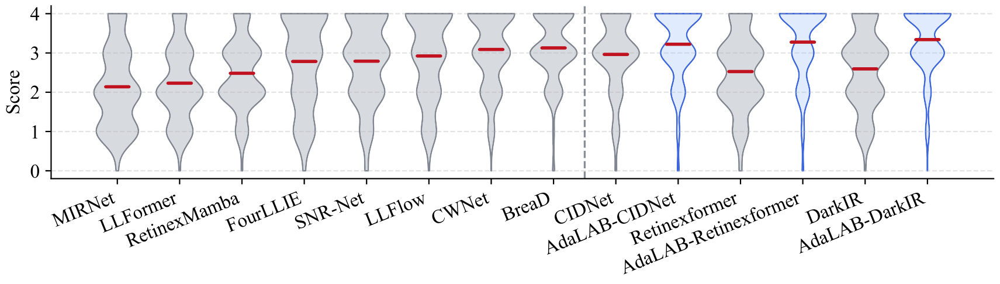

We focus on color-faithful LLIE and introduce CAGE,
which suppresses embedded color bias before backbone enhancement
and rectifies post-enhancement saturation abnormality
through an adaptive cylindrical color transform,
delivering a ~2.5 dB PSNR gain
with only 0.07M extra Parameters and less than 0.01G FLOPs .
Our motivation.(a→b) Direct brightening makes color shifts more visible.
(a→c) Baseline enhancement improves brightness but leaves color bias and saturation
abnormalities.
(a→d) Our CAGE delivers more faithful color restoration.
Gallery
01
Image Arena
Compare enhanced candidates, inspect paired details, and choose the result with the most faithful color
restoration.
Low-light / GT-mean Enlightened Input
input.png
Low-light image
Enhanced Results
A
output_A.png
Enhanced image A
B
output_B.png
Enhanced image B
C
output_C.png
Enhanced image C
Left click to select
Right click to compare
Middle click to enlarge
Vote Statistics
OursOthers
02
Color Space Visualization
Inspect an image and the full color gamut in synchronized 3D mappings, with brightness-slice previews
across color spaces.
Input Image
Image
Upload an image to visualize its 3D mapping and the corresponding color
space voxels 3D mapping.
Image 3D Mapping
0 points
Each sampled pixel becomes a 3D point colored by its source RGB value.
Gamut 3D Mapping
0 points
A uniformly sampled RGB gamut is mapped into the
selected space.
1 / 1
Hold middle mouse to
pan
Scroll over image to
zoom
Click blank area to
close
Scroll over blank area or
<>
Arrow keys or
123
Number keys to
switch
The Problem
01 · Input
Embedded color bias
Low signal-to-noise ratio, camera hardware, and in-camera processing introduce color shift
during low-light image formation.
01
02 · Pipeline
Bias propagation
A color space can reorganize distorted colors, but the disturbance persists through enhancement
unless the chromatic distribution is corrected.
02
03 · Output
Chromatic distortion
Brightness enhancement amplifies chromatic responses, causing global color bias and regional
under-saturation and over-saturation.
03
Method Overview
CAGE
integrates a low-light image enhancement backbone with the forward and inverse
transforms of AdaCCT. The two transforms map images between RGB and AdaLAB while regulating the
chromatic distribution before and after backbone enhancement.
Interactive Node Map
CAGE processing architecture
Select a block to inspect its operation and equation.
<> to navigate.
Click the figure to step through each block interactively.
AdaCCT: Correct Before Enhancement, Rectify After Enhancement
Pipeline of AdaCCT.
The forward transform converts RGB to LAB, applies
chromatic debiasing and chroma scaling, and constructs AdaLAB. The inverse transform reverts
chroma scaling, applies out-of-gamut lightness compensation, and converts LAB back to RGB.
Qualitative Results
Qualitative comparisons on paired and unpaired datasets show reduced global color bias, more stable
local saturation, and more natural chromatic transitions.
Paired Dataset Results
Paired comparison on LOLv1 dataset. CAGE achieves more faithful
color restoration with reduced color bias.
Paired comparison on LOLv2-real dataset. Real-world low-light
images with challenging color shifts.
Paired comparison on LOLv2-synthetic dataset. Synthetic low-light
images with controlled color distortion.
Unpaired comparison on real-world images. CAGE produces more
faithful colors and more balanced saturation across varied low-light scenes.
User Study

User study results. Human preference evaluation of the visual
quality of enhanced images.
Quantitative Results
CAGE consistently improves all backbones with only 0.07M additional parameters across multiple
benchmarks.
Main Results
Quantitative comparisons on LOLv1, LOLv2-real, and LOLv2-synthetic datasets.
CAGE consistently improves all backbones with only 0.07M additional parameters
and less than 0.01G FLOPs. Metrics: PSNR (dB) / SSIM.
Bold = best result. Following
HVI-CIDNet
, we use GT-mean evaluation on LOLv1 dataset during testing. Since LOLv1 contains only 15
testing pairs, and direct metric evaluation can be sensitive to global brightness
fluctuation, which may obscure differences in color restoration and structural recovery.
Quantitative comparisons on challenging datasets (SDSD-indoor, SDSD-outdoor, and SID).
CAGE
achieves consistent improvement with PSNR gains up to 1.78 dB on SDSD-indoor. Metrics: PSNR
(dB) / SSIM.
Bold = best result.
For the implementation and project materials, visit the
project repository.
If you find the work useful, please cite:
@inproceedings{yang2026cage,
title = {Towards color-faithful low-light image enhancement via adaptive color debiasing and saturation rectification},
author = {Yang, Zhichen and Xu, Rui and Niu, Yuzhen and Li, Fusheng and Da, Hui and Cheng, Ri},
booktitle = {Proceedings of the ACM International Conference on Multimedia (ACMMM)},
year = {2026}
}
Acknowledgement
If you find our work helpful, please also consider citing the following related work:
@inproceedings{xu2025urwkv,
title = {{URWKV}: Unified {RWKV} model with multi-state perspective for low-light image restoration},
author = {Xu, Rui and Niu, Yuzhen and Li, Yuezhou and Xu, Huangbiao and Liu, Wenxi and Chen, Yuzhong},
booktitle = {Proceedings of the IEEE/CVF Conference on Computer Vision and Pattern Recognition (CVPR)},
pages = {21267--21276},
year = {2025}
}
We thank the authors of the PointDiT, ReasonX, and Lotus project pages, whose page designs inspired this
website.
CAGE is heavily inspired by HVI-CIDNet and OKLab. We sincerely thank the authors for their elegant work.